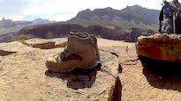

Photo Galleries

Desert SW, 2019
Images from our 2019 field trip (GEOL 4960) to the Basin and Range and Colorado Plateau (AZ, CA, NV, UT).

Scotland, 2018
Images from our 2018 trip to Scotland.
Spain, 2016
Video of our trip to the Pyrenees with folks from the University of Missouri. (34 min., 1280 x 720, 2.7 GB, .mov)

Wyoming
Images from my recent visits to Branson Field Lab, near Lander, WY.

Costa Rica, 2015
Images from our 2015 field trip (GEOL 4960) to Costa Rica.
Desert SW, 2014
Images and videos from our 2014 trip (GEOL 4960) to the Basin and Range and Colorado Plateau (AZ, CA, NV, UT).

Costa
Rica, 2013
Images from our 2013 field trip (Geology 4960) to Costa Rica.

Desert
SW, 2012
6-min.
video (1280x720, 500 MB, .mov) from our 2012 field trip (GEOL 4960) to
the Basin and Range and the Colorado plateau (AZ, CA, NV, UT)

Costa
Rica, 2011
Images from our 2011 field trip (Geology 4960) to Costa Rica.
Desert
SW, 2010
Images from our 2010 field trip (Geology 4960) to the Basin and Range
and the Colorado Plateau (AZ, CA, NV, UT).

Costa
Rica, 2009
Images from our 2009 field trip (Geology 4960) to Costa Rica.

Desert
SW, 2008
Images from our 2008 field trip (Geology 4960) to the Basin and Range
and the Colorado Plateau (AZ, CA, NV, UT).

Costa
Rica, 2007

Desert
SW, 2006
UTC links
UTC Home Page
Biology,
Geology and Environmental Science Home Page
Lupton Library
Geologic
organizations
American
Geological Institute
American Geophysical
Union
Geological
Society of America
Visit my alma maters
University
of North Carolina
University
of New Hampshire
Miscellaneous
Mount
Washington
Mies World
Headquarters
|
Jonathan W. Mies
Robert Lake Wilson
Professor of Geology
Structural
Geology
Tectonics
Mineralogy
X-ray Diffraction
Seismology
|
|
Contact information
Department of Biology, Geology and Environmental Science, MC
2653
The University of Tennessee at Chattanooga
Chattanooga, TN 37403-2598
Phone: 423-425-4606
Fax: 423-425-4423
E-mail: Jonathan-Mies@utc.edu
Web page: http://www.utc.edu/Faculty/Jonathan-Mies
Education
| Ph.D. Geology |
1990 |
University of North Carolina
at Chapel Hill |
| M.S. Geology |
1987 |
University of North Carolina
at Chapel Hill |
| B.S. Geology |
1981 |
University of New Hampshire |
Teaching
I routinely teach the following
courses:
|
Geology
1110
|
Physical
Geology |
|
Geology
4070
|
The
Dynamic Earth (w/links for e'quakes and
volcanoes) |
|
Geology 4420
|
X-Ray
Diffraction Methods |
|
Geology 4510
|
Structural
Geology |
|
Geology
4520
|
Field
Methods in Structural Geology |
|
Geology
4800
|
Geology
Seminar
|
|
Geology
4900
|
Senior
Seminar |
|
Geology 4960
|
Geology
Field Experience (SW US, Costa Rica, Spain, Scotland) |
Selected
Publications and Recent Abstracts
Hayes,
J. A. (student) and Mies, J. W., A tale of two hurricanes: the peculiar
microseisms of Matthew and Florence in Onslow Bay, North Carolina, Geol.
Soc. Am. Abs. with Prog. v. 51, n. 3.
Mies, J. W., 2017, Hurricane Matthew's microseismic impression on Chattanooga, Geol.
Soc. Am. Abs. with Prog. v. 49, n. 3.
Mies, J. W., Brock-Hon, A. L., Churnet, H. G., Holmes, A.
E., and Williams, W. K., 2016, The curricular benefits of a seismometer
in UTC's geology program, Geol.
Soc. Am. Abs. with Prog. v. 48, n. 3.
Mies, J. W., Holmes, A. E., and Churnet, H. G., 2014, The
Costa Rican field experience at UTC: 20 years in the making. Geol.
Soc. Am. Abs. with Prog. v. 46, n. 6, p. 47.
Howard,
C. W., Mies, J. W., Bodkin, T. E., and Brackett, D. G., 2011,
Bentonite-controlled deformation of Middle Ordovician limestone at
Chickamauga Dam, Chattanooga,
Tennessee. Geol. Soc. Am. Abs. with Prog. v. 43, n. 5, p. 99.
Howard,
C. W. (student), and Mies, J. W., 2008, Mineralogy and structural
setting of the
middle Ordovician T3 bentonite at Chickamauga Dam, Chattanooga,
Tennessee. Geol. Soc. Am. Abs. with Prog. v. 40, n.
4, p. 61.
Bodkin, T. E., and Mies, J. W., 2008, X-ray
diffraction (XRD) analysis of human cremains and concrete. American
Academy of Forensic Science 60th Anniversary Scientific Meeting,
February 18-23, 2008, Washington, DC.
Mies, J. W., 2006, Visualization of folds using
custom-generated digital elevation models. Geol. Soc. Am.
Abs. with Prog. v. 38, n. 3.
Steltenpohl, M. G., Hames, W. E., Kunk, M. J.
& Mies, J. W. 2001. 40Ar/39Ar data from the western Blue Ridge
and their implications for timing of metamorphism. Geol. Soc.
Am. Abs. with Prog. v. 33, n. 2, p. 6.
Mies, J. W. 2000. Structural analysis of joints across
the Valley and Ridge and the Cumberland Plateau, southeastern
Tennessee. Geol. Soc. Am. Abs. with Prog. v 32, n.
2, p. 62.
Mies, J. W. 1998. A geomechanical model for
postorogenic fold-axis-parallel extension and its control on cross-fold
joints. Geol. Soc. Am. Abs. with Prog. v. 30, n. 7,
p. 62.
Mies, J. W. 1996. Automated digital compilation of
structural symbols. Journal of Geological Education
v. 44, p. 539-548.
Mies, J. W. 1995. Simple methods for rapid
determination of lattice-preferred orientation in two dimensions. Journal
of Geological Education v. 43, p. 6-10.
Mies, J. W. 1993. Structural analysis of sheath folds
in the Sylacauga Marble Group, Talladega slate belt, southern
Appalachians. Journal of Structural Geology v.15,
n. 8, p. 983-993.
Mies, J. W. & Steltenpohl, M. G. 1993.
Microstructures and quartz crystallographic fabric in the Hollis
Quartzite, Pine Mountain window, Lee County, Alabama. Alabama
Geological Survey Circular 172, Tuscaloosa, 43 p.
Mies, J. W. 1991. Planar dispersion of folds in
ductile shear zones and kinematic interpretation of fold hinge girdles.
Journal of Structural Geology v. 13, n. 3,
p. 281-29
Videos
|
Spain, 2016
Our trip to the Pyrenees with folks from the University of Missouri. (34 minutes, 1280 x 720, 2.7 GB, .mov)
|

|
Monte Perdido
A climb of Monte Perdido, the highest limestone massif in western
Europe, while on our 2016 trip to the Pyrenees. (4 minutes, 1280 x 720,
.mov)
|

|
Grand Canyon, 2014
A hike into the Grand Canyon, while on our 2014 trip to
the Basin and Range and the Colorado Plateau. (2 minutes, 1280 x 720,
165 MB, .mov)
|

|
SP Crater, 2014
A hike up SP Crater, while on our 2014 trip to
the Basin and Range and the Colorado Plateau. (2 minutes, 1280 x 720,
140 MB, .mov)
|
|
Desert
SW, 2012
Clips from our 2012 trip to the Basin and Range and the Colorado Plateau.
(6 minutes, 1280 x 720, 500 MB, .mov)
|

|
Desert
SW, 2010
Excerpts from a student's video featuring our visits to Frenchman
Mountain,
Resting Springs Pass, Warm Springs (Death Valley), Turtlebacks, San
Francisco
Volcanic Field, Grand Canyon, Capitol Reef, Book Cliffs, Bryce Canyon,
and Zion. (13 minutes, 640 x 480, 348 MB, .mov)
|

|
Exfoliation of vermiculite at 900 degrees C, featuring
"Big Bertha"
|

|
This sloth, Lenny, shared our cabina in Cahuita, Costa
Rica. Video by Chris Vernon.
|
| Click on image to view video. |
|
Personal Interests
|
When I'm not at work or in the field, I enjoy sailing,
working on the house or in the yard, or tinkering with my vintage
sports cars ('67 Alpine). I
also have a lingering interest in
peculiar steam locomotives.
|
| Click on image to view video. |
|

|
Sailing on Lake Chickamauga in my
Lightning.
|

|
Details of my 1967 Series V
Alpine.
|
|